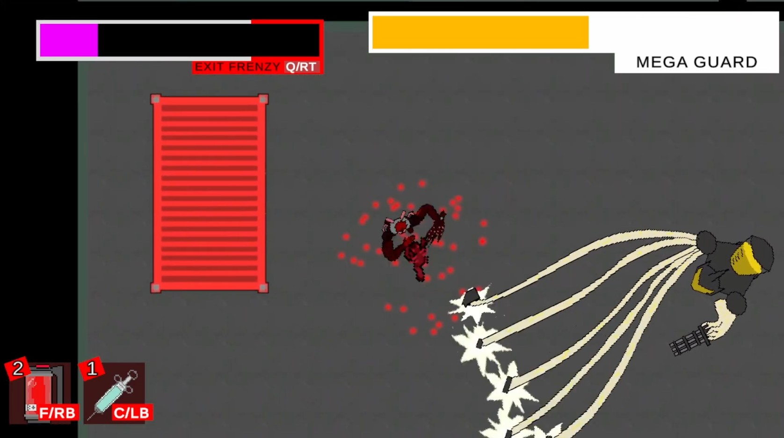
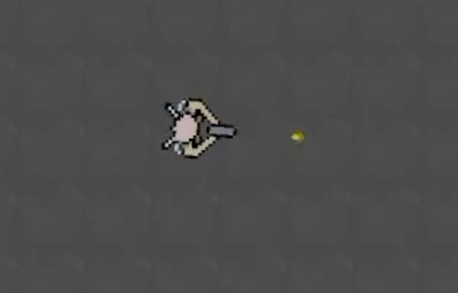

Fren-Z

Fren-Z is a top-down hack and slash where players take the role of an unwilling test subject, who has been given bio-mechanical upgrades that activate once they are injured. The player will travel through three levels on their journey for revenge, with a boss at the end of each stage.
Jump to Sections
My role and contributions
Role: Gameplay Programmer
Tools: Unity, C#, Github
Team: Aden and Thomas
Project span: Jan 2024 – April 2024
I implemented core gameplay systems including player movement, combat interactions, and some enemy AI behaviors.
I collaborated closely with designers to prototype new mechanics, iterating quickly on level flow and encounter pacing based on playtest data.
I programmed much of the character animations, visual effects, as well as the UI, as well as refining these features after playtests to improve the gameplay experience.
What is Fren-Z?
The frenzy mechanic makes the game very different from other hack and slash titles, players will not die once damaged, instead, they will enter a frenzied rage where their moves are more powerful. A gauge, called the “Frenzy Timer”, appears. It decreases with time and with damage taken. In their regular form, the player has only a dash and a ranged attack. In their frenzied form, the player has three attacks; the dash attack, light attack and heavy attack.

Players will want to dip in and out of this mode carefully to maintain their highest power. Players can’t stay in frenzy mode forever, if their frenzy meter fully depletes, they lose, so they must achieve quick kill chains to recharge the meter and, when they want, exit frenzy to stay safe.
The First Prototype and Feedback
During early playtests and design reviews, a primary piece of critical feedback was a lack of visual feedback as they attacked and were attacked by enemies. I added a red glow effect to enemies when they are damaged, but it did not seem that it visually popped out enough, especially in visually crowded areas. Because the game lacked strong sensory cues, players struggled to understand the impact of their actions or state changes, dragging down the overall immersion and experience.
An example of a symptom of this issue was how underutilized the ‘Heavy Attack’ was, often perceiving it as inferior to the nimble ‘Light Attack’. The former is slower, but its selling point was that it was highly effective at dealing massive damage to bulky, slower enemies. After the feedback, I realized it was the attack’s unremarkable visual presentation that was underselling how powerful it was.
The Second Prototype
To all attacks, I implement visceral blood splatters, faster flashes and sound effects that signify each attack’s speed, moveset. Using coroutines in C#, I also added a temporary slowing effect when attacking to make the attacks feel more impactful. Using Unity’s Cinemachine package, I added a camera shake effect to the strongest attacks. Some repeat playtesters remarked that the attack felt stronger now, even though the damage, range and speed was mostly identical to what it was during their last playthrough. These micro-feedbacks successfully elevated the overall game loop, with playtesters reporting a noticeably more thrilling, satisfying, and immersive experience.
The experience of working on this project taught me the idea that perception is reality for the player. Using simple visual and audio cues at the right time can completely change the feel of a game for the better when applied correctly.